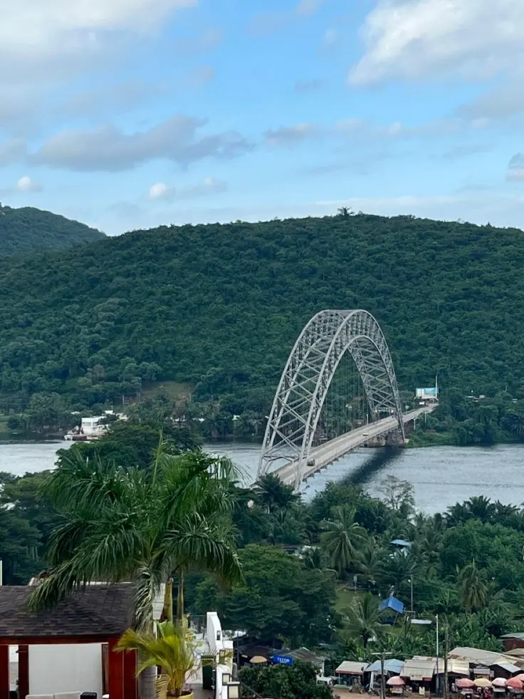

Discover culture, history, and natural beauty.

Explore Ghana
About Ghana
Ghana is a country located in West Africa along the Gulf of Guinea. It is known for its rich cultural heritage, diverse landscapes, and welcoming people. The country gained independence from Britain in 1957 and became the first sub-Saharan African nation to achieve independence from colonial rule. Ghana features a variety of natural attractions including tropical rainforests, beautiful beaches, wildlife parks, and historic forts and castles that reflect its important role in global history. The capital city, Accra, is a vibrant urban center that blends modern development with traditional culture. The country is famous for its festivals, music, colorful textiles such as kente cloth, and delicious local cuisine. Ghana’s economy is supported by resources like gold, cocoa, and oil, and it is one of the leading cocoa producers in the world. Visitors to Ghana enjoy exploring national parks, historical landmarks, lively markets, and experiencing the country’s warm hospitality.
Weather
Temperature: 8°C
Wind Speed: 10 km/h
Wind Chill: